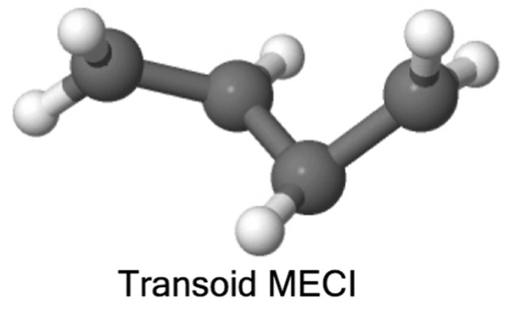
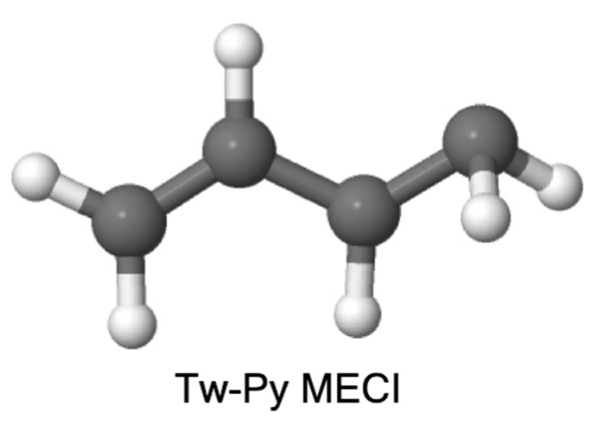

1,3-Butadiene — Known Excited-State Dynamics
Photoexcitation
- Ground-state s-trans conformer; UV populates the bright $S_2$ ($\pi\pi^*$) state
- Ultrafast internal conversion $S_2 \to S_1$ (tens of fs)
Two $S_1$/$S_0$ Conical Intersections
- Tw-Py: terminal-carbon twist + pyramidalization with charge separation — polarized, ethylene-like
- Transoid: twist about the central backbone, tetraradical — radicaloid, the cis–trans isomerisation coordinate
Branching Is Decided on $S_1$
- The $S_1$ wavepacket bifurcates toward these seams — the branching is set on $S_1$, before reaching $S_0$
- Simulations strongly favour the transoid (isomerisation) channel; the Tw-Py (pyramidalisation) route is minor

